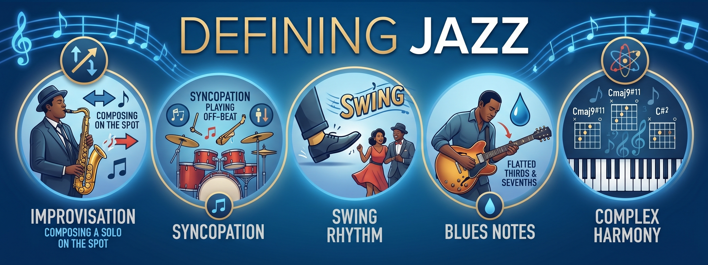

Improvisation, swing, and individual voice — the three pillars of a living art form.

Pillar 01
Jazz musicians compose in the moment — creating new melodies in real time over the song's chord progression. No performance is ever the same.
Pillar 02
Accenting off-beats and stretching the first of each pair of eighth notes creates the irresistible forward momentum that defines the jazz groove.
Pillar 03
Every jazz musician cultivates a unique, identifiable tone — growls, bends, and slurs that make their instrument sound like an extension of their own voice.
Jazz is a complex, expressive musical genre that originated in the United States, specifically in the African American communities of New Orleans, during the late nineteenth and early twentieth centuries. At its core, defining jazz is notoriously difficult because it is not a single, static style of music, but rather a constantly evolving family of genres. A comprehensive definition centers on three fundamental pillars: improvisation, syncopated rhythms, and a unique approach to harmony that emphasizes individual expression over rigid uniformity.
Pillar One
The most defining characteristic of jazz is improvisation. Unlike classical European music, where performers strictly adhere to a written score, jazz musicians compose in the moment. A jazz performance typically involves playing a pre-determined melody — known as the "head" — followed by a series of improvised solos over the song's chord progression.
During these solos, the musician spontaneously creates new melodies, engaging in a real-time musical conversation with the rest of the band. This reliance on improvisation means that a jazz piece is never played exactly the same way twice. The music is a living, breathing entity that reflects the mood, environment, and specific interactions of the performers at that exact moment.
Man, if you gotta ask what it is, you'll never know.
— Louis Armstrong, on jazzPillar Two
The second foundational element of jazz is its rhythmic feel, primarily characterized by syncopation and the concept of "swing." Syncopation involves shifting the musical accent away from the strong beats of a measure onto the weaker off-beats — creating a sense of forward momentum, surprise, and rhythmic tension.
"Swing" is a specific type of rhythmic lilt born from this syncopation, where a pair of eighth notes is played with the first note held slightly longer than the second, producing a propelling, danceable groove. Even in avant-garde or free jazz subgenres where a traditional swing feel is abandoned, complex interactive polyrhythms remain a vital component of the music's DNA.
Pillar Three
The third crucial aspect of defining jazz lies in its harmonic language and tonal individuality. Jazz harmony is heavily influenced by the blues, frequently employing "blue notes" — flattened thirds, fifths, and sevenths — that add emotional depth and vocal-like qualities to instrumental playing.
Furthermore, jazz musicians actively seek out a unique, identifiable tone on their instruments. Instead of striving for the homogenous, pure sound often prized in classical orchestras, jazz artists utilize growls, bends, slurs, and varied embouchure techniques to make their instruments sound like an extension of their own speaking or singing voice. This emphasis on distinct personal expression is what separates a jazz musician from a mere music performer.
Jazz is not just music — it's a way of life, it's a way of looking at the world.
— Nina Simone